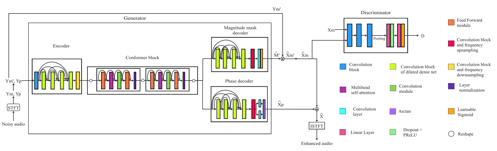

MiniGAN
Towards an Efficient and Accurate Speech Enhancement by a Comprehensive Ablation Study
Paper: linkAbstract.0 In recent years, significant advancements in speech enhancement have been made through phase reconstruction, dual-branch methodologies, or attention mechanisms. These methods produce exceptional results but at the expense of a high computational budget. This work aims to enhance the efficiency of the MP-SENet architecture by introducing MiniGAN, a generative adversarial network in the time-frequency domain. It features an encoder-decoder structure with residual connections, conformers, and parallel processing of signal magnitude and phase. We employ data augmentation techniques in training, investigate the impact of various loss terms, and examine architectural alterations to achieve lower operational costs without compromising performance. Our results on the VoiceBank+DEMAND evaluation set report that MiniGAN achieves competitive figures in objective metrics, obtaining a PESQ of 2.95, while maintaining low latency and reducing computational complexity. The suggested MiniGAN system is ideally suited for real-time applications on resource-constrained devices, as it achieves a real-time factor of 0.24 and has a mere 373k parameters.
official demo page: https://valle-demo.github.io
my implementation: https://github.com/lifeiteng/vall-e
Model Structure

The model consists of a generator and a discriminator. The noisy signal magnitude and phase are obtained in TF domain after performing the STFT. The generator employs as input the concatenated magnitude and phase, which are estimated from the noisy signal. In the latent space of the generator, two conformers are placed: one focuses on the time and the other on the frequency features. They are followed by two decoders used for parallel processing of the magnitude and phase of the noisy signal. The magnitude mask decoder outputs a mask that is applied to the noisy signal magnitude, obtaining the enhanced signal magnitude. Finally, by means of the phase and magnitude of the enhanced signal, the enhanced audio is reconstructed in time domain through the Inverse Short Time Fourier Transform (ISTFT).
Audio Samples
| VB+D Audio 1 | VB+D Audio 2 | Non VC+D Audio | |
|---|---|---|---|
| Noisy | |||
| Clean | |||
| MiniGAN | |||
| MiniGAN-FT | |||
| MiniGAN-48 | |||
| MiniGAN-NDA | |||
| MiniGAN-WN | |||
| MiniGAN-ED |